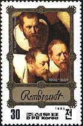
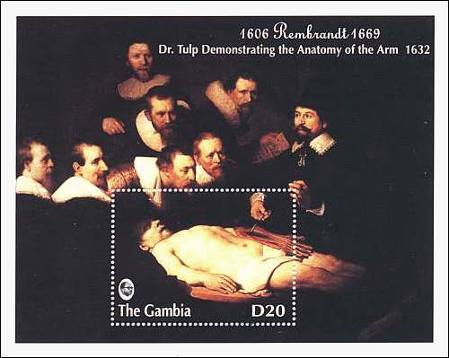
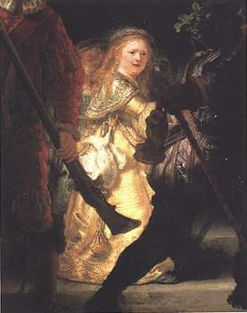
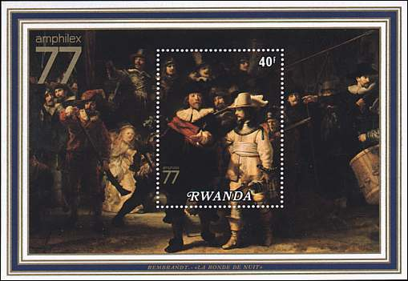
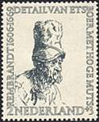
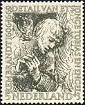
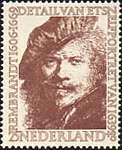
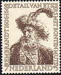
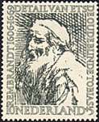

| Created
08/31/00. Revised:
12/24/06. Copyright © 2000 - 2007 by Victor Manta, Switzerland. All rights reserved in all countries. |
|
|
THE ANATOMY LESSON
Signed and dated: Rembrandt fe 1632. Nicolaes Pieterszoon Tulp (1593-1674) was the first anatomy doctor of the Surgery Guild of Amsterdam. In January 1632 he presented a public lecture about the physiology of the arm, on the corpse of an executed criminal. The young Rembrandt, who just moved from Leyden to Amsterdam, was entrusted with the task to paint this event. One of the six persons grouped around the body (there are no physicians among them) should hold a table with the names of all persons shown on the painting. This table was overpainted at a later time. A seventh person was also added later, either by Rembrandt himself or by one of his pupils. Tip: Point to the stamps with the mouse index for more information.
|
 |
 |
The above souvenir sheet was issued by Gambia in 1993, as part of a set of eight stamps and two sheets.
THE NIGHT WATCH
Signed and dated: Rembrandt f 1642. Exposed in Amsterdam at Rijksmuseum, this is
the most famous of Rembrand's works of art. More
accurately titled The Shooting Company of Captain Frans Banning Cocq, it
portrays the bustling activity of a military company, gathered behind its
leaders, preparing for a parade or shooting contest. In departing from the
customary static mode of painting rows of figures for the corporate portrait,
Rembrandt achieved a powerful dramatic effect. Despite the popular conception
that the painting was rejected by those who commissioned it, and led to a
decline in Rembrandt's reputation and fortune, it was actually well received.
The
painting has a dramatic history. Because it was moved from place to place, it
was cut in order to fit between two doors. In the process it lost 30 cm
(0.12") of its original height and 40 cm of its width (30 cm from the left
and 10 cm from the right). For this reasons two men
and a child disappeared from the left and a part the drum on the right was cut
away as well.
The presence of two glittering girls in the middle of the
composition (the one in foreground has a cock suspended at her belt) stayed
enigmatic for generations of art specialists. Maybe these are simply children,
who were dressed quite unusually at that time. (Source: Klassiker der Kunst,
Rembrandt. Rizoli Editore, Mailand, 1969. Scientific addendum: Paolo Lecaldano)
 |
 |
The souvenir sheet presented above was issued by Rwanda in 1977, commemorating the Amphilex 77 exhibition. Labeled in French: Rembrandt. La ronde de nuit.
REMBRANDT'S ETCHINGS
For Rembrandt, drawing and etching were as important as painting. Some 1,400 drawings, recording a wide range of outward and inner visions, are attributed to him, most of them made for their own sake rather than as preparatory studies for paintings or prints. Because they were made for Rembrandt's private use, the majority of them are not signed. Rembrandt's etchings were widely renowned even during his lifetime. He exploited the etching process for its unique potential, using scribbling strokes to produce extraordinarily expressive lines. In combination with etching he employed the drypoint needle, achieving special effects with the burr in his mature graphic work.
|
 |
 |
 |
 |
 |
The set above was issued by the Netherlands post in 1956, in order to commemorate the 350th birth anniversary of Rembrandt.
Background: Rembrandt, Self-portrait, Signed Rembrandt f. 1640. The National Gallery, London, UK.
| Created
08/31/00. Revised:
12/24/06. Copyright © 2000 - 2007 by Victor Manta, Switzerland. All rights reserved in all countries. |
|
|